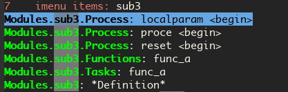

Table of Contents
1 系统环境
tips: 以下系统环境安装过程中，如果下载包比较慢，可以试试搜索一下其对应的国内源，说不一定可以加速
1.1 windows
- cygwin
- mysys2
- wsl: 这货要求系统是win10
1.2 linux
既然都选择了 linux, 您随意就好
2 terminal 之 zsh
一般终端下默认的 shell 为 bash, 不妨（ 强烈推荐 ）换一个试试，比如此处提到的 zsh 。
- 各系统环境下都有自己的安装方法，都不用搜索老大哥出马，百度都能解决，再此我就给一下源码文件地址： https://sourceforge.net/projects/zsh/files/
- 只安装 zsh 的话也不堪重用，接下来给它安装插件 oh-my-zh: https://ohmyz.sh/
- 跟着其提示安装就好，其默认会把文件安装在 ~/.oh-my-zsh 下。对默认配置不满意的话可以更新 ~/.zshrc
默认打开的插件只有 git, 见 ~/.zshrc 里的变量 plugins 的值，实际上我的插件设置如下
plugins=(git zsh-syntax-highlighting zsh-autosuggestions fzf z)
其中三个插件还需要额外安装一下，工具如何使用还请看其相关文档……
- 上一步给出的地址涉及到了 github, 这里又牵扯到版本管理工具 git, 类似于 svn, 各系统环境下请自行查找安装方法
- 不太记得前面的步骤是否会把用户登录的默认 shell 更新到 zsh, 没有的话就通过命令 chsh 自己动手改一下
3 编辑器之 emacs
The best editor is neither Emacs nor Vim, it's Emacs and Vim!
在寻找写 verilog 代码的解决方案时接触到 verilog-mode, 然后才是 emacs, 接着便是 spacemacs, 最后才形成了我的 spacemacs.d
3.1 安装
- emacs:https://ftp.gnu.org/gnu/emacs/emacs-26.3.tar.gz
- 以上是源码文件，安装过程中的问题都可通过搜索解决，就不啰嗦废话
- 也可通过各系统集成的包管理器安装，只是默认安装的版本可能不一样
- spacemacs: 给 emacs 套壳子
git clone https://gitee.com/mirrors/spacemacs ~/.emacs.d cd ~/.emacs.d git checkout -b develop origin/develop; #默认的master分支更新较慢
- ~/spacemacs.d: 针对 verilog 和个人习惯做了一些配置
走到这一步，如果前面猴急，已经启动过 emacs, 请先将 "~/.emacs" 文件删除
git clone https://gitee.com/my2817/spacemacs-d ~/.spacemacs.d
- 启动 emacs 完成所有依赖的插件安装
- 终端中输入 "emacs" 启动并开始一大堆未知插件安装……
- 输入命令后 emacs 变为绿色，说明 oh-my-zsh 的 zsh-syntax-highlighting 插件开始工作了
- 过程中可能需要多次重启
- 注意观察终端，刚键入 "e" 时，其自动在后面补全了 "macs", 但光标位置不在词尾，说明 oh-my-zsh 的 zsh-autosuggestions 插件开始工作了
- 此时可以选择手动将后面的 "macs" 输全，再回车
- 或则按方向键
→回车 - 本人更习惯快捷键
CTRL-e 回车
- 注意观察终端，刚键入 "e" 时，其自动在后面补全了 "macs", 但光标位置不在词尾，说明 oh-my-zsh 的 zsh-autosuggestions 插件开始工作了
- 此步骤需要联网，如果是在无网络环境上，劝退吧……
- 或者，在有网环境上先安装好，再把 "~/.emacs.d" "~/.spacemacs.d" 打包到无网络环境中……
- 终端中输入 "emacs" 启动并开始一大堆未知插件安装……
3.2 初识
emacs 中所有的操作都对应一个定义好的 function, 为了方便，已经将部分 function 绑定到特定的按键上，如后文介绍到的快捷键；一些知道名字，不知快捷键的 function 可以通过 Alt-x （同时按下 ALT 和 x 两个键），然后输入对应的 function 名字进行执行。
spacemacs 中默认安装了 evil 插件，就我的使用经历，其模拟了 vi 所有的操作方式。
3.2.1 启动
emacs：如果直接使用本命令启动，每次都会打开一个全新进程，速度较慢，且各进程间的操作是独立的emacscline -c -a “”：推荐使用本命令启动- 第一次会启动后台守护进程，较慢
- 注意：不能关闭运行本命令的终端，个人习惯将其挪到不常用的 workspace 中
- 即使关闭当前的 frame （通过 gui 右上角的关闭按钮），也不会结束该进程，再次通过本命令（不一定在第一次启动终端里）可快速连接到守护进程，状态不会丢失
- 完全关闭：
spc q q, 或者执行命令：kill-emacs
3.2.2 File: 文件操作
spc: 指代空格键，spacemacs 中将其设置为 leader key, 敲一下它，会给出一个引导菜单，每个字母对应一个操作spc f: 两个按键用空格分隔，表示按键序列，先敲一下spc后敲f，文件操作相关，下面还有二级菜单，可以都看看，都是字面意思，就不详细介绍spc f r: 打开最近打开过的文件，通过访问历史，速度更快，似乎是我用的较多的操作
ctrl-g: 两个键中间有连字符，表示两个键同时按下；操作过程中的后悔药，中断当前操作的意思ctrl: 这个键在 emacs 里用的比较多，同样的还有alt，为了偷懒，书写时：ctrl= ~C~; ~alt~ =M.spc f f: 过程中，浏览文件路径时，不论当前路径有多深，键入两个/, 会直接跳到文件系统的根目录，键入~, 则会跳转到用户的 HOME 目录下C-j: 同向下方向键，同C-nC-k: 同向上方向键，同C-pC-h: 到上一级目录C-l: 同回车
3.2.3 Buffer: 操作
spc b: 文件打开读入内存后就不叫文件了，叫 "buffer", 相关操作集中定义在此spc b r: 还是最近打开过的文件
- 在 normal 模式下移动方式和 vi/vim 一致，
- 上下左右：
hjkl, - 上下滚动：
C-e,C-y - 居中：
z z, - 翻页：
C-fC-b
- 上下左右：
- insert 模式下：
spc不能作为 leader key 直接呼出引导菜单了，可以用M-m代替Esc: 返回 normal 模式C-l: 光标所在行居中C-[: 仍然返回 normal 模式
3.2.4 Project:
依赖插件：projectile. 一切皆文本，所谓 Project, 都是人为定义，这里的说一下定义 Project 的方式。
- 插件会自动识别版本管理系统，设置其根目录为 Project 的根目录，比如 git 的标志目录为 .git, SVN 的标志目录为最顶层的 .SVN
- 个人习惯，任何项目根目录，先"git init" 初始化为 git 仓库
- 手动指定，在 Project 的根目录下生成文件 ".projectile", 插件识别文件后将其所在目录设置为 Project 的根目录
- 这个文件在生成 Project 的 TAG 文件时还有用，后面再说
spc p: Project 相关操作集中定义，前提是当前打开的文件已经在一个 Project 内部spc p f: 打开 Project 内的文件- 文件太多影响查找速度，如果是通过 git 识别 Project, 通过 .gitignore 文件内容忽略不需要查找的文件
spc p b: Project 内的 buffer 切换，限定在 Project 内部，再也不怕同时打开多个同名文件spc p r: 打开 Project 内最近打开过的文件spc p G: 根据语法，生成 Project 内所有源码文件的 TAGS 文件，放在 Project 的根目录下- 需要外部工具 ctags 的支持，建议安装的版本是 universal-ctags
TAGS 文件太大，影响查找速度，可以在 .projectile 里增加以下内容将用不上的目录排除，如下：
-/digital/to_FPGA -/digital/sch -/digital/netlist
C-]: 在 TAGS 中搜索光标所在位置的 symbol, 如果只有一个则直接跳转到其定义处；如果多个，则给出候选列表C-o: 反向跳转
3.2.5 Windows
如下所示，最大那个框叫 frame, 一个 frame 可以分割为多个 window, 每个 wdinow 里可以打开一个独立的 buffer ( 也可以是相同的，按使用需求选用吧 ),
+------------------------+--------------------------+ | | | | | | | | | | window 1 | window 2 | | | | | | | | | | +------mode line---------+--------mode line---------+ | minibuffer | +---------------------------------------------------+
spc w /左右分割 windowspc w -上下分割 windowspc w d关闭当前 windowspc w Num跳转到对应编号的 window, 编号在 window 左下角，spc w w在 window 间循环跳转，只有两个 window 时习惯用这个，无脑切换
3.2.6 Layouts
本意是说多窗口布局吧，, 可以保存起来，多个 layout 可以比较方便的切换，而我个人习惯是将每个 Project 保存一个 layout, 方便不同 Project 间的切换，操作流程如下：
spc l:spc l ?: 查看按键绑定提示，此步随意spc l 0: 新建一个 layout, 按提示输入一个名字，按我的用法就是输入 Project 名字spc f f: 打开 Project 的根目录spc l S: 保存当前的 layout 到一个文件- 选择前面输入的 Project 名字并回车确认
- 选择 "[>DONE<]" 并回车
- 选择保存 layout 文件的位置并输入文件名，我习惯放在 "~/.emacs.d/.cache/layouts" 目录下
spc l L: 打开保存好的 layout, 对于我来说是 Project
3.2.7 编辑
sp c x a: align, 快捷键用于代码格式化，对齐spc j w C: 在当前可视范围内，快速跳转到任何以字符C开始的 symbol 处，如果有多处，根据提示继续输入提示的按键序列spc j j C: 同上，但不要求输入的C是 symbol 的开始字符- 多位置编辑替换，对搜索列出的候选项进行编辑
spc s p搜索当前 Project，或者spc s d搜索当前目录- 列出候选项后
C-c C-e，会给出新的buffer，进入多处替换模式 - 在该buffer中对候选项进行编辑
- 编辑完成后，进入普通模式，按
,，根据提示- wgrep-abort-changes:放弃修改
- wgrep-finish-edit:完成修改
- wgrep-save-all-buffers:将所有修改保存到文件
q退出该模式
diff
参考 ediff-* 系列命令，很好用，该系列工具会出现至少包含一个名为 "Ediff Control Pannel" 的窗口，只有选中它时，才能使用其相关命令:
?查看帮助说明，再次?隐藏帮助说明,# #:比较时忽略空白符，执行此操作后再进行一次!, 就不会受空白符的影响了 ediff-current-file: 对当前文件更改前后的内容进行比较比较项目 说明 ediff-regions-linewise, ediff-regions- 询问两个缓冲区的名字，然后比较相应的区域。不过你只能在每一个缓冲区中选定一个区域，而不能比较一个文件缓冲区的两个区域。 ediff-buffers 询问两个缓冲区的名字，然后比较 ediff-files 询问两个文件的名字，加载之，然后比较 ediff-windows-linewise, ediff-windows-wordwise 让你选两个窗口，然后比较窗口的内容。 -linewise- 函数比 -wordwise- 函数要快， 但另一方面， -wordwise- 工作方式更好，尤其是小区域作业时。 -linewise- 一行一行地比较， -wordwise- 一个单词一个单词地比较 快捷键 命令 说明 q ediff-quit 关闭 ediff control buffer， 并退出 ediff Space 或 n ediff-next-difference 下一个差异处 Del 或 p ediff-previous-difference 上一个差异处 [n]j ediff-jump-to-difference 有数字前缀 [n] 修饰，第n个差异处,n可为负数 v 或 C-v ediff-scroll-vertically 所有缓冲区同步向下滚动 V 或 M-v ediff-scroll-vertically 所有缓冲区同步向上滚动 < ediff-scroll-horizontally 所有缓冲区同步向左滚动 > ediff-scroll-horizontally 所有缓冲区同步向右滚动 (vertical bar) ediff-toggle-split 切换缓冲区布局方式, 水平和竖直 m ediff-toggle-wide-display 在正常 frame 大小和最大化之间切换 a ediff-copy-A-to-B 把Buffer-A的内容复制到Buffer-B b ediff-copy-B-to-A 把Buffer-B的内容复制到Buffer-A r a 或 r b ediff-restore-diff 恢复 Buffer-A 或 Buffer-B 差异区域中的被修改的内容 A 或 B ediff-toggle-read-only 切换 Buffer-A 或 Buffer-B 的只读状态 g a 或 g b ediff-jump-to-difference-at-point 根据光标在缓冲区中的位置，设置一个离它们最近的差异区域为当前活动区域 C-l ediff-recenter 恢复先前的所有缓冲区比较的高亮差异区。 !ediff-update-diffs 重新比较并高亮差异区域 w a 或 w b ediff-save-buffer 保存 Buffer-A 或 Buffer-B 到磁盘 E ediff-documentation 打开 Ediff 文档 z ediff-suspend 关闭 ediff control buffer, 只是挂起，可在以后恢复 ediff 状态
3.2.8 帮助系统
C-h m: 列出当前打开的所有插件，以及对应的按键绑定C-Mouse_Right: ctrl+鼠标右键呼出菜单- spacemacs document: ~/.emacs.d/doc/DOCUMENTATION.org
C-h f:spc h d f, 查看 function 的说明文档C-h v:spc h d v, 查看 variable 的说明文档
3.3 一些函数
- flush-lines: 删除匹配的行，空行的正则表达式为"^\s-?+$" （即使有空白符，也算空行）
- keep-lines: 如名字，功能与上一个命令相反
- sort-lines: 对选中的行进行排序
- 使用linux的 sort 命令进行复杂排序，比如第几个字段作为关键词进行排序
delete-duplicate-lines:
先使用'sort-lines'对当前buffer进行排序，再使用本函数, 本函数一次只能从相邻的两行中删除一行，所以需要多次运行，或者使用以下awk命令（不需要事先排序）,该命令中的 $0 表示行内容完全重复时，进行删除操作，相应替换为$n，则表示当第n个字段相同时，进行删除操作。
awk '{!a[$0]{print}}'
- ivy-push-view:将当前的窗口即对应的buffer信息保存起来，通过 ivy-switch-view可重新恢复该视图
- my-highlight-symbol-in-frame: 通过多个 window 打开多个不同的文件），高亮显示光标下的 symbol （在所有的文件中）
3.4 regexp 正则表达式
语法见相关文档: 菜单 help-> search documentation ->，提示输入关键词，输入 "regexp" 凡事提示regexp的地方，均可使用regexp,
4 中文
4.1 字体
- 默认的字体配置在 "~/.spacemacs.d/init.el" 中，见变量 "dotspacemacs-default-font"
- 本配置中，为了达到 org-mode 中的表格对齐效果，使用了 cnfonts 插件，如果不需要，在文件 "~/.spacemacs.d/init.el" 中，注释掉变量 my-config-packages 内的 cnfonts 即可
- 字体安装
下载字体文件到 "~/.fonts" 目录（仅对当前用户生效，对系统安装的话大概是 "/usr/share/fonts" 目录），并在该目录下执行以下命令：
mkfontscale mkfontdir fc-cache
4.2 输入法
本配置中有两个输入方案可供使用：
- pyim
- 本方案不需要其他工具配合使用
配置文件中找到以下的代码通过使用分号注释保留自己使用的输入法即可
(setq pyim-default-scheme 'wubi) (setq pyim-default-scheme 'quanpin) (setq pyim-default-scheme 'xiaohe-shuangpin)
- emacs-rime
- 如文档所述，其需要外部输入工具 rime 的支持，其如何配置请自行查询
- 在目前的配置中，会把 emacs-rime 的代码下载到 "~/.emacs.d/.cache/quelpa/build/rime" 目录下，且需要手动编译（编译时还有错，安提示修改）
- 配置, 文件中需要设置 rime–module-path 变量到编译好的 librime-emacs.so 文件
在 emacs 中通过以下变量配置选择输入方案，在我的配置中有两个地方设置了该变量，最后生效的是 emac-rime, 请根据需要选择注释其中一处
(setq default-input-method "pyim")
5 Verilog-mode
一般遇到的问题、需求，别人已经帮我们解决,见Faq 在 verilog 模式下通过 ctrl + 鼠标右键呼出菜单，有3个 verilog 相关的菜单可关注一下
5.1 配置
verilog相关插件有两个：
- verilog-mode : 虽然emacs本身已经集成了，但不一定是最新版本（我一般是官网下载后，直接覆盖emac自带的，反正emacs都是自己安装）,另外意外的从官网发现了verilator,verilog-perl，似乎都比较好玩儿
- my-verilog.el : 这个文件的原始版本，是从网上抄过来的，现在似乎找不到出处，如有版权问题，麻烦提醒一下，谢谢！
5.2 常用的一些功能
- verilog-header: 原定义在verilog-mode.el中，我做了一定修改，放在my-verilog.el中，哪天跳槽了记得要改（前面已经说过了怎么查该函数对应的快捷键）
- 代码补全：基于skeleton代码片断、框架补全,输入关键字，按照列表选择，可以不用方向键，
c-j: down;c-k: up;c-l: 相当于回车 本补全方式中，有时可能需要用户输入相应的信息，此时需要从minibuffer输入，此时不能使用关键字补全功能 - yasnippet 代码片断补全,暂时没有加入到补全后端里，需要快捷键触发:
M-m i s,always as eg:- yasnippet-always
- yasnippet-always2 : 与skeleton不同，用户输入时不会使用minibuffer,同样可以使用关键字补全功能；使用tab跳转到下一个需要输入的位置
- my-verilog-create-tb: 功能如名字所示,其会新建一个buffer，保存
c-x c-s,c-c c-a执行verilog-auto verilog-auto时找不到instance? Faq中已经提示过了如何解决，或者参考 【
c-h v verilog-library-flags】麻烦的是每次遇到这问题都得在文件尾添加该语句。 我的解决方案是利用49.2.5 Per-Directory Local Variables, 假设使用以下目录结构：
project-root +---digital +--rtl +--sub-module-a | +--sub-module-a.v +--subm-module-b +--subm-module-b.v命令
my-project-dir-local-init会在project的根目录下生成一个.dir-locals.el的文件，内容如下，将 {protject-root}/digtal/rtl 路径之下的所有包含 .v 文件的路径都加入到 verilog-auto 的搜索路径 verilog-library-directories 中，路径下的 .v 文件均可被 verilog-auto 找到，可按需修改。((verilog-mode . ( (eval . (setq verilog-library-directories '(".")) ) (eval . (mapcar (lambda (file) (add-to-list 'verilog-library-directories (file-name-directory file))) (directory-files-recursively (concat (projectile-project-root) "digital/rtl") "\.[s]?v$") ) )) ))
my-verilog-align-indent-inst-signal: 初始化代码如以下格式，其中 my-verilog-min-spc-for-align 用于控制端口和信号名之间最小的空格数量，默认值为1, 如果要关闭其默认执行，参考其帮助文档
module top(/*autoarg*/); sub1_x u_sub1 (/*autoinst*/); sub2_xxxxx u_sub2 (/*autoinst*/); sub3 #(/*autoinstparam*/) u_sub3(/*autoinst*/); endmodule // top module sub1_x(/*autoarg*/); input aa, bb, cc; output dd; endmodule // sub1 module sub2_xxxxx(/*autoarg*/); input aa, bb, cc; output dd; endmodule // sub2 module sub3 #(parameter PAR_A = 10, PAR_BB = 20, PAR_ccc = 30 ) (/*autoarg*/); input aaxx, bbxx, cc; output dd; endmodule // sub3 // Local Variables: // my-verilog-min-spc-for-align: 20 // End:
默认会在"verilog-auto"后自动执行本命令（如果模块实例已经例化完成<–各端口信号独占一行，也可手动执行"my-verilog-align-indent-inst-signal"）。结果如下，所有实例的左括号对齐，所有端口信号对齐，注意以下示例代码结束最后几行是在设置本地变量，将 my-veriog-auto-align 的值设置为 nil, 则不会在 verilog-auto 时自动执行对齐函数
1: module top(/*autoarg*/); 2: 3: sub1_x u_sub1 (/*autoinst*/ 4: // Outputs 5: .dd (dd), 6: // Inputs 7: .aa (aa), 8: .bb (bb), 9: .cc (cc)); 10: sub2_xxxxx u_sub2 (/*autoinst*/ 11: // Outputs 12: .dd (dd), 13: // Inputs 14: .aa (aa), 15: .bb (bb), 16: .cc (cc)); 17: sub3 #(/*autoinstparam*/ 18: // Parameters 19: .PAR_A (PAR_A), 20: 21: .PAR_ccc (PAR_ccc)) 22: u_sub3 (/*autoinst*/ 23: // Outputs 24: .dd (dd), 25: // Inputs 26: .aaxx (aaxx), 27: .bbxx (bbxx), 28: .cc (cc)); 29: 30: endmodule // top 31: 32: 33: module sub1_x(/*autoarg*/ 34: // Outputs 35: dd, 36: // Inputs 37: aa, bb, cc 38: ); 39: input aa, bb, cc; 40: output dd; 41: endmodule // sub1 42: 43: module sub2_xxxxx(/*autoarg*/ 44: // Outputs 45: dd, 46: // Inputs 47: aa, bb, cc 48: ); 49: input aa, bb, cc; 50: output dd; 51: endmodule // sub2 52: 53: module sub3 #(parameter 54: PAR_A = 10, 55: PAR_BB = 20, 56: PAR_ccc = 30 57: ) 58: (/*autoarg*/ 59: // Outputs 60: dd, 61: // Inputs 62: aaxx, bbxx, cc 63: ); 64: input aaxx, bbxx, cc; 65: output dd; 66: endmodule // sub3 67: 68: // Local Variables: 69: // my-verilog-min-spc-for-align:1 70: // my-verilog-auto-align:t 71: // End:
verilog-insert-indices：从“0”开始在当前列插入编号；如下代码，光标移动到第一行代码的“a”后面执行本命令，按提示输入编号的最大值
a| = b a[ 0] = b a = b a[ 1] = b a = b a[ 2] = b a = b a[ 3] = b a = b ==> insert-indices ==> a[ 4] = b a = b a[ 5] = b a = b a[ 6] = b a = b a[ 7] = b a = b a[ 8] = b
verilog-generate-numbers：类似verilog-insert-indices
buf buf| buf buf000 buf buf buf buf001 buf buf buf buf002 buf buf buf buf003 buf buf ==> generate-numbers ==> buf buf004 buf buf buf buf005 buf buf buf buf006 buf buf buf buf007 buf buf buf buf008"
- 嵌入其他格式代码
本配置可识别以下格式的多行注释，其内部会被识别为 org-mode, 从而使用 org-mode 的 source code 编辑功能
/*-- org !org --*/
plantuml 代码
在以下代码中嵌入了 plantuml 代码，光标在代码区域内时，通过
C-c C-c会自动生成名为 fsm.png 的状态机转换图module src_test; /*-- org #+begin_src plantuml :file fsm.png @startuml title Main FSM of dat_pop state idle: default state wait: a transition state pop: data output idle --> idle : reset idle -down-> wait: posedge vsync wait -> pop: almose full pop -up->idle: error, need to reset @enduml #+end_src !org --*/ endmodule
字符图
利用 emacs 自带的 artist-mode, 在一个 buffer 内画好后再复制到代码中；或者在代码中插入以下格式代码，光标移动到 artist 后，按
C-c ‘，会打开一个以 artist-mode 为 major mode 的 buffer, 画好图后, c确认并退出，或者, k进行撤销/*-- org #+begin_src artist #+end_src !org --*/
- plantuml 需要 jre 支持
- ditaa 需要 jre 支持
- graphviz-dot
{kind=link}
{kind=link}
{kind=link}
{kind=link}
5.3 verilog-auto
当执行verilog-auto时，可能出现提示 "end xxxxx properties"信息，但verilog-auto并没有执行完成，使用emacs的batch mode解决
emacs --batch file.v -f verilog-batch-auto
另，在我的配置中改写了verilog-mode中的一些函数，执行以上命令可能会出错，请使用以下命令：
emacs --batch file.v -l path/to/projectile.el -f verilog-batch-auto #在spacemacs中, projectile.el位置 ~/.emacs.d/elpa路径下，请自查
5.4 AUTOOUTPUT
使用以下变量可将不希望出现再端口列表中的信号排除
// // Local Variables: // verilog-auto-output-ignore-regexp:"\\(RSTN_EXT\\)" // verilog-auto-input-ignore-regexp:"\\(CREG_SPD_COMB_EN\\)" // End: //
如果一个信号通过 autoinst 已经自动连接完成，需要强制加入到端口列表中，可以通过在适当的位置焦加入 output/input 关键字解决。 另一种情景是一个信号 A 如果已经通过 autooutput 呈现再端口列表中，端口列表的实顺序已经固定下来。此时如果将信号 A 接入到其他模块B中。信号 A 将不会自动出现再端口中，通过上面的方法的话可能改变端口顺序。此时可在例化模块 B 时，控制信号 A 的位置实现，如下代码所示，信号 A 前面没有类似 Inputs/Outputs 的关键字
sub_B u_B ( .A (A), // Inputs .CC (CC), /*AUTOINST*/);
5.5 flycheck
- 默认打开此功能，调用EDA工具对代码进行实时编译，简单低级错误可以立即提示，马上改掉。
spc e v: 大概得到如下信息，因为在我自己电脑上目前只安装了verilator, 如果有多个EDA工具可用的话，可使用spc e s进行选择Syntax checkers for buffer tb.sv in verilog-mode: verilog-irun (disabled) - may enable: Automatically disabled! - executable: Not found verilog-iverilog (disabled) - may enable: Automatically disabled! - executable: Not found verilog-leda (disabled) - may enable: Automatically disabled! - executable: Not found verilog-verilator - may enable: yes - executable: Found at /usr/local/bin/verilator_bin
spc t s：语法检查器开关- 自定义：参考 flycheck-define-checker 帮助文档，verilog-irun的定义在 "~/.spacemacs.d/layers/my-config/packages.el"
{kind=link}
5.6 跳转
- 通过 Project 中介绍 ctags，可跳转到 module/task/function/class 等的的定义处
- imenu: Buffer 内部
M-m s j或者SPC s j提示如：

通过 imenu 插件，其会搜索文件内的 module/inst/task/function 位置; 同时配置里改写了verilog-mode默认产生imenu的方式，verilog代码中加如类似 "//being: tagName" 的代码，将tagNmae加入到imenu中实现快速跳转到该tag，
module sub3 #(parameter PAR_A = 10, PAR_BBBBBB = 20, PAR_ccc = 30 ) (/*autoarg*/ // Outputs dd, // Inputs aaxx, bbxx, cc ); input aaxx, bbxx, cc; output dd; localparam // begin:localparam par_af = 10, par_ad = 20; always @ ( /*AUTOSENSE*/ ) begin if (xx) begin:reset end else begin: proce end end task func_a; begin end endtask // func_a function func_a; begin end endfunction // func_a endmodule // sub3
5.7 代码折叠
eamcs里代码太长的时候，可以使用下面的函数对begin-end代码进行折叠
- hs-hide-block，折叠前，光标要在begin的下一行
- hs-show-block, 展开光标所有行被折叠的代码
6 Org-mode
Orange Your Life In Plain Text!
- 在任何 buffer 中使用插入 org 表格，使用 orgtbl-mode
- org-babel，可以让许多不同语言的代码块一起工作
配置
(org-babel-do-load-languages 'org-babel-load-languages '((emacs-lisp . t) (ruby . t) (ditaa . t) (python . t) (sh . t) (latex . t) (plantuml . t) (dot . t) (R . t)))
示例
module test; input a; output b; endmodule
digraph G { size="8,6" ratio=expand edge [dir=both] plcnet [shape=box, label="PLC Network"] subgraph cluster_wrapline { label="Wrapline Control System" color=purple subgraph { rank=same exec sharedmem [style=filled, fillcolor=lightgrey, shape=box] } edge[style=dotted, dir=none] exec -> opserver exec -> db plc -> exec edge [style=line, dir=both] exec -> sharedmem sharedmem -> db plc -> sharedmem sharedmem -> opserver } plcnet -> plc [constraint=false] millwide [shape=box, label="Millwide System"] db -> millwide subgraph cluster_opclients { color=blue label="Operator Clients" rankdir=LR labelloc=b node[label=client] opserver -> client1 opserver -> client2 opserver -> client3 } }